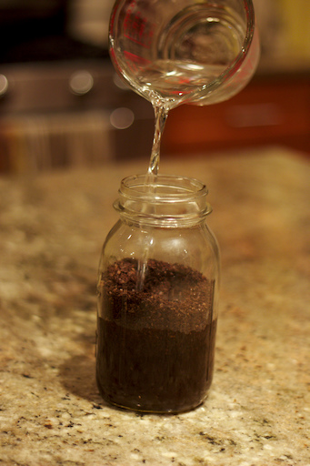
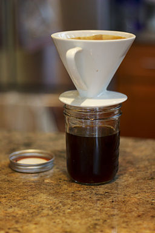
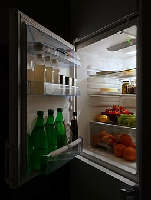
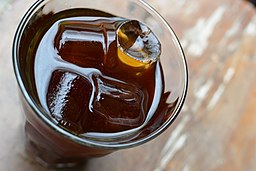

At every coffee shop, my go to drink of choice is a simple iced cold brew coffee.
1. Coffee beans must be ground in order to make your coffee.

2. Water should be poured into the ground coffee beans to create the mixture.

3. The coffee must drip for 12-24 hours through a special filter.

4. Put the coffee in the fridge overnight.

5. Serve the coffee over ice.
 1. Coffee beans must be ground in order to make your coffee.
1. Coffee beans must be ground in order to make your coffee.